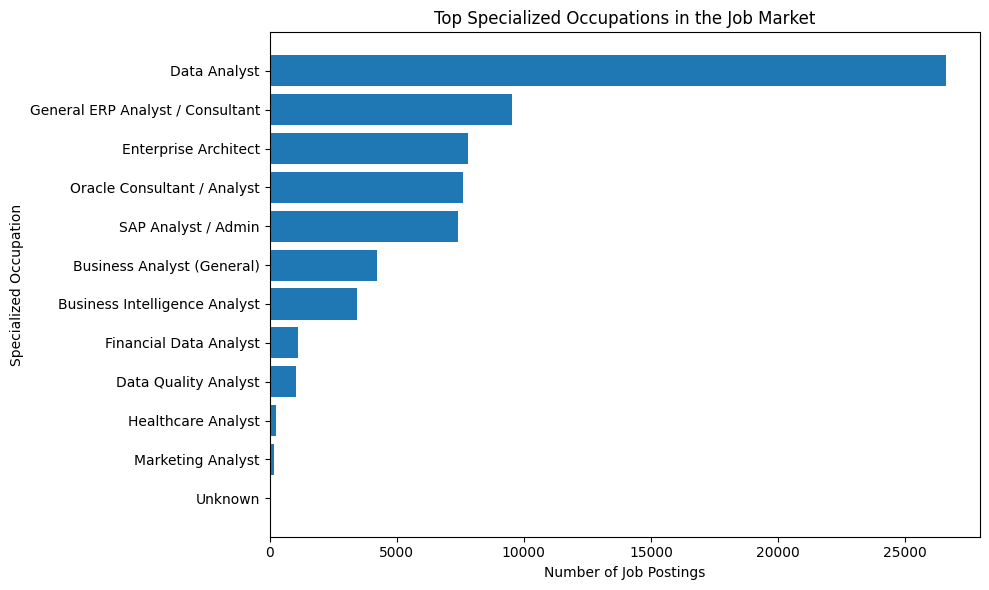
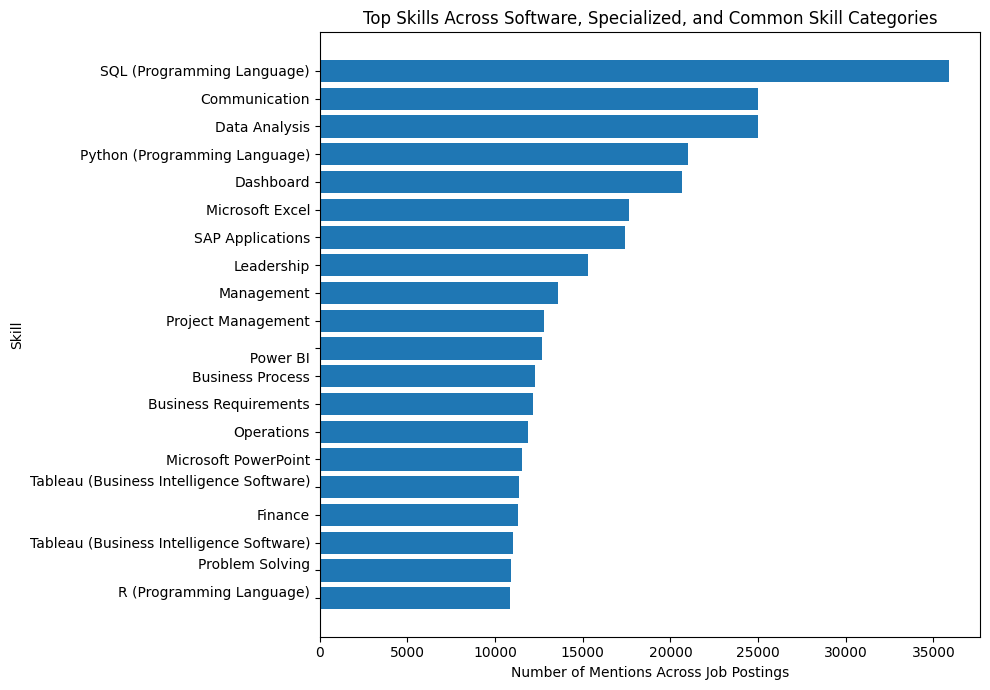

Exploratory Data Analysis (EDA) is a crucial step in the data analysis process that involves summarizing the main characteristics of a dataset, often using visual methods. The goal of EDA is to gain insights into the data, identify patterns, detect anomalies, and test hypotheses before applying more formal statistical modeling techniques.
from pyspark.sql import SparkSession# Start a Spark sessionspark = SparkSession.builder.config("spark.driver.host", "localhost").appName("JobPostingsAnalysis").getOrCreate()spark.catalog.clearCache()# Load the CSV file into a Spark DataFramedf = spark.read.option("header", "true").option("inferSchema", "true").option("multiLine", "true").option("escape", "\"").csv("./data/clean_job_postings.csv")# Register the DataFrame as a temporary SQL viewdf.createOrReplaceTempView("clean_job_postings")# Show Schema and Sample Dataprint("---This is Diagnostic check, No need to print it in the final doc---")# comment the lines below when rendering the submissiondf.printSchema()df.show(5)
plt.figure(figsize=(10, 6))plt.barh( top_specialized_occupations["Specialized Occupation"], top_specialized_occupations["Count"])plt.xlabel("Number of Job Postings")plt.ylabel("Specialized Occupation")plt.title("Top Specialized Occupations in the Job Market")plt.gca().invert_yaxis()plt.tight_layout()plt.show()

import matplotlib.pyplot as pltspecialized_occupation_counts = ( df .filter(df["SPECIALIZED_OCCUPATION"].isNotNull()) .groupBy("SPECIALIZED_OCCUPATION") .count() .orderBy("count", ascending=False))# Convert top 15 to pandas for display and plottingtop_specialized_occupations = ( specialized_occupation_counts .limit(15) .toPandas())# Rename columnstop_specialized_occupations.columns = ["Specialized Occupation","Count"]top_specialized_occupations
Specialized Occupation
Count
0
Data Analyst
26616
1
General ERP Analyst / Consultant
9549
2
Enterprise Architect
7784
3
Oracle Consultant / Analyst
7588
4
SAP Analyst / Admin
7416
5
Business Analyst (General)
4220
6
Business Intelligence Analyst
3456
7
Financial Data Analyst
1123
8
Data Quality Analyst
1020
9
Healthcare Analyst
257
10
Marketing Analyst
152
11
Unknown
17
Visualization
plt.figure(figsize=(10, 6))plt.barh( top_specialized_occupations["Specialized Occupation"], top_specialized_occupations["Count"])plt.xlabel("Number of Job Postings")plt.ylabel("Specialized Occupation")plt.title("Top Specialized Occupations in the Job Market")plt.gca().invert_yaxis()plt.tight_layout()plt.show()
Skill demand analysis - Explode SOFTWARE_SKILLS_NAME, SPECIALIZED_SKILLS_NAME, and COMMON_SKILLS_NAME, then count frequency of each skill across all postings.
Table
from pyspark.sql import functions as Fimport matplotlib.pyplot as pltskill_columns = ["SOFTWARE_SKILLS_NAME","SPECIALIZED_SKILLS_NAME","COMMON_SKILLS_NAME"]skill_dfs = []for col_name in skill_columns: temp_df = ( df .select( F.lit(col_name).alias("skill_type"), F.explode( F.split( F.regexp_replace(F.col(col_name), r'[\[\]"]', ''),r',\s*' ) ).alias("skill") ) .withColumn("skill", F.trim(F.col("skill"))) .filter(F.col("skill").isNotNull()) .filter(F.col("skill") !="") .filter(F.col("skill") !="None") ) skill_dfs.append(temp_df)# Stack all skill rows togetherall_skills = skill_dfs[0]for temp_df in skill_dfs[1:]: all_skills = all_skills.unionByName(temp_df)# Count skill frequency across all postingsskill_frequency = ( all_skills .groupBy("skill") .count() .orderBy("count", ascending=False))top_skills = skill_frequency.limit(20).toPandas()top_skills
skill
count
0
SQL (Programming Language)
35859
1
Communication
25015
2
Data Analysis
24991
3
Python (Programming Language)
20974
4
Dashboard
20676
5
Microsoft Excel
17615
6
SAP Applications
17433
7
Leadership
15269
8
Management
13596
9
Project Management
12774
10
\n Power BI
12695
11
Business Process
12267
12
Business Requirements
12154
13
Operations
11899
14
Microsoft PowerPoint
11553
15
Tableau (Business Intelligence Software)\n
11350
16
Finance
11329
17
Tableau (Business Intelligence Software)
11015
18
Problem Solving\n
10880
19
R (Programming Language)\n
10836
Visualization
plt.figure(figsize=(10, 7))plt.barh( top_skills["skill"], top_skills["count"])plt.xlabel("Number of Mentions Across Job Postings")plt.ylabel("Skill")plt.title("Top Skills Across Software, Specialized, and Common Skill Categories")plt.gca().invert_yaxis()plt.tight_layout()plt.show()#| echo: true#| eval: true

Skill-by-role analysis - Compare top skills within each major role group.
from pyspark.sql import functions as Fimport matplotlib.pyplot as pltfrom pyspark.sql.window import Window# Skill columns to analyzeskill_columns = ["SOFTWARE_SKILLS_NAME","SPECIALIZED_SKILLS_NAME","COMMON_SKILLS_NAME"]# Choose major role groups by demandtop_roles = ( df .filter(F.col("SPECIALIZED_OCCUPATION").isNotNull()) .groupBy("SPECIALIZED_OCCUPATION") .count() .orderBy(F.col("count").desc()) .limit(6))top_role_names = [ row["SPECIALIZED_OCCUPATION"]for row in top_roles.collect()]skill_dfs = []for skill_col in skill_columns: temp_df = ( df .filter(F.col("SPECIALIZED_OCCUPATION").isin(top_role_names)) .select( F.col("SPECIALIZED_OCCUPATION"), F.lit(skill_col).alias("Skill_Type"), F.explode( F.split( F.regexp_replace(F.col(skill_col), r'[\[\]"]', ''),r',\s*' ) ).alias("Skill") ) .withColumn("Skill", F.trim(F.col("Skill"))) .filter(F.col("Skill").isNotNull()) .filter(F.col("Skill") !="") .filter(F.col("Skill") !="None") ) skill_dfs.append(temp_df)# Combine all skill rowsrole_skills = skill_dfs[0]for temp_df in skill_dfs[1:]: role_skills = role_skills.unionByName(temp_df)# Count skills within each rolerole_skill_counts = ( role_skills .groupBy("SPECIALIZED_OCCUPATION", "Skill") .count() .orderBy("SPECIALIZED_OCCUPATION", F.col("count").desc()))role_window = Window.partitionBy("SPECIALIZED_OCCUPATION").orderBy(F.col("count").desc())top_skills_by_role = ( role_skill_counts .withColumn("rank", F.row_number().over(role_window)) .filter(F.col("rank") <=5) .orderBy("SPECIALIZED_OCCUPATION", "rank"))top_skills_by_role_pd = top_skills_by_role.toPandas()top_skills_by_role_pd
SPECIALIZED_OCCUPATION
Skill
count
rank
0
Business Analyst (General)
Communication
1752
1
1
Business Analyst (General)
Microsoft Excel
1694
2
2
Business Analyst (General)
Microsoft PowerPoint
1456
3
3
Business Analyst (General)
Leadership
1295
4
4
Business Analyst (General)
Operations
1290
5
5
Data Analyst
SQL (Programming Language)
23937
1
6
Data Analyst
Data Analysis
19291
2
7
Data Analyst
Python (Programming Language)
15041
3
8
Data Analyst
Dashboard
13579
4
9
Data Analyst
Microsoft Excel
10287
5
10
Enterprise Architect
Enterprise Architecture
4103
1
11
Enterprise Architect
Microsoft Azure
3925
2
12
Enterprise Architect
Amazon Web Services
3735
3
13
Enterprise Architect
Leadership
3167
4
14
Enterprise Architect
Communication
3024
5
15
General ERP Analyst / Consultant
SAP Applications
7601
1
16
General ERP Analyst / Consultant
Communication
3190
2
17
General ERP Analyst / Consultant
Business Process
2452
3
18
General ERP Analyst / Consultant
Finance
2360
4
19
General ERP Analyst / Consultant
Business Requirements
2313
5
20
Oracle Consultant / Analyst
Oracle Cloud
2993
1
21
Oracle Consultant / Analyst
\n Oracle Cloud
2893
2
22
Oracle Consultant / Analyst
Business Process
2621
3
23
Oracle Consultant / Analyst
Communication
2394
4
24
Oracle Consultant / Analyst
Business Requirements
2247
5
25
SAP Analyst / Admin
SAP Applications
6793
1
26
SAP Analyst / Admin
Communication
2087
2
27
SAP Analyst / Admin
Business Process
1945
3
28
SAP Analyst / Admin
SAP ERP
1941
4
29
SAP Analyst / Admin
Business Requirements
1737
5
Visualization
Time trend analysis - Use POSTED by month. This shows whether demand is stable, rising, or seasonal.
Geography analysis - Use STATE_NAME, CITY_NAME, or MSA_NAME to show where demand is concentrated.
Remote-work analysis - Compare REMOTE_TYPE_NAME by role and skill.
Salary vs demand analysis - Use AVERAGE_SALARY, compare demand with pay by role or skill cluster.